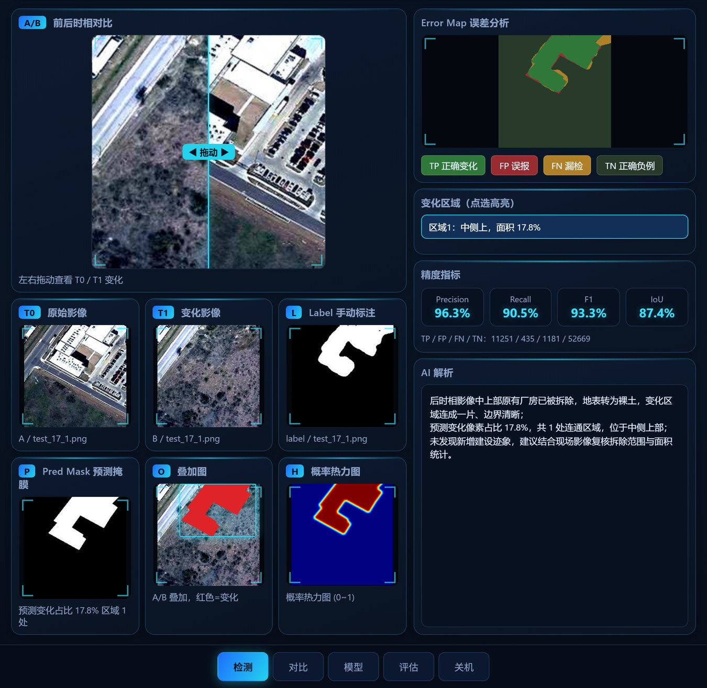
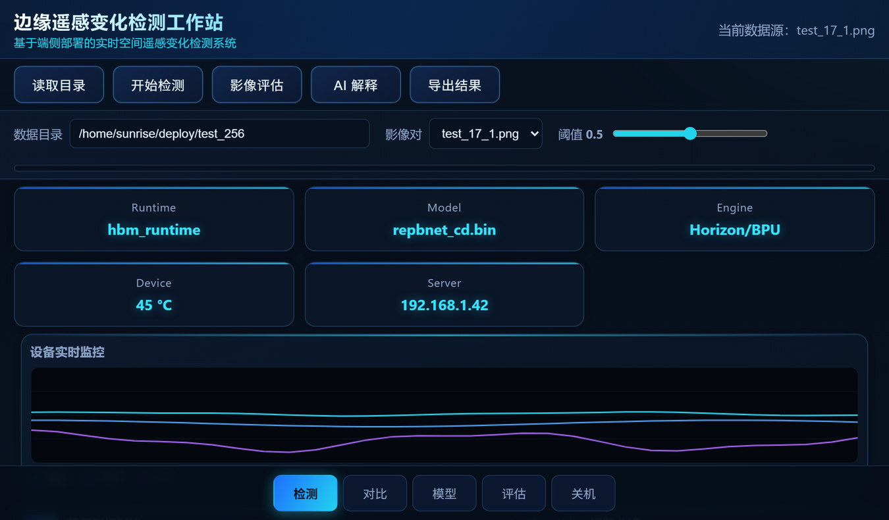

RSI-EdgeVision 是一台面向基层监测单位的端侧遥感变化检测工作站。它在国产边缘板卡 RDK X5 上以 int8 定点模型完成双时相影像的变化检测，整机 12 V 锂电供电、无风扇被动散热，在无外电、无网络的野外现场即可输出变化图斑、面积统计与误差四色图，数据不出域。
技术侧，我们自研轻量化变化检测网络 RTMA-Net，以权重共享的 MobileNetV2 编码器把双时相影像映射到同一语义空间，再经 TFRM、MSFM、SAttM 三个模块分别针对伪变化干扰、尺度跨度、细长边界三类难点定向补偿，参数量仅 247 万。经 60 组真实数据校准 int8 量化后，模型体积由 10.2 MB 压缩到 3.2 MB（−68%）。在 LEVIR-CD 全量测试集（2 048 对）上取得 Precision 0.8782、Recall 0.8517、F1 0.8648、IoU 0.7617，端到端单帧 40.91 ms。
市场侧，据《中国卫星遥感及应用产业发展蓝皮书（2024 年）》，"十四五"期间我国卫星遥感及应用产业累计产值突破 1 万亿元；艾瑞咨询指出，2025 年我国商业遥感数据与服务市场规模约 18 亿美元，下游应用市场整体规模已突破 2 100 亿元。其中"必须到现场、且现场没有网"的执法核查与应急救援场景，构成我们的可服务市场。
商业模式上，以整机销售 + 软件年费 + 定制模型服务三档收入切入：第一年签约 6 台整机与 3 家软件用户，收入 26.4 万元；第三年收入约 382 万元，第 19 个月实现盈亏平衡。首轮拟融资 150 万元，用于算法迭代、样机试制与省内渠道建设。
| 维度 | 具体内容 |
|---|---|
| 谁 | 县级自然资源局执法监察、应急管理局地质灾害防治、林草与生态环境监测站，及承接巡检任务的无人机服务公司。 |
| 什么场景 | 违建核查、土地违规使用、灾后损毁评估、植被与岸线变化——作业地点在野外、山区、灾后现场，没有网络，也常常没有外电。 |
| 多痛 | ① 影像回传云端排队，救援决策等不起；② 数据出域有合规顾虑；③ 人工逐幅比对易漏；④ 外委解译周期长、费用高。 |
| 愿意付多少 | 以一个县级单位年均 5 000 个图斑估算，人工逐幅比对约需 25 人·天。本方案把"发现变化"自动化、人工只做确认，核查工作量可压缩约 80%。若按外委解译 200 元/图斑测算，单县每年可减少外委支出约 80 万元；对应本方案整机 + 软件年费合计约 5 万元，投入产出比约 1 : 16。 |
| 层级 | 数值 | 测算逻辑与数据来源 |
|---|---|---|
| TAM | 2 100 亿元 | 艾瑞咨询《2025—2026 年中国商业遥感卫星行业研究报告》：下游应用市场整体规模已突破 2 100 亿元（同期数据与服务市场约 18 亿美元）。 |
| SAM | 168 亿元 （广东约 17 亿元） | 测算：筛选必须到现场且现场无网的场景（基层国土执法、应急地质灾害、林草与环保监测、无人机巡检），保守按 8% 估算得 168 亿元；广东按 1/10 计约 17 亿元。 |
| SOM | 530 万元 （3 年累计） | 测算：依托广东省内高校、导师与无人机服务商渠道，3 年内实际可签约 约 80 台整机 + 50 家软件用户，累计收入约 530 万元，占广东 SAM 约 0.31%。 |
数据来源：艾瑞咨询《2025—2026 年中国商业遥感卫星行业研究报告》、《中国卫星遥感及应用产业发展蓝皮书（2024 年）》。8% 与 1/10 为测算假设，SOM 口径见第八章。
插上 SD 卡 → 选前后两期影像 → 点「开始检测」 → 屏幕同屏给出六视图联动（前时相、后时相、真值、预测掩膜、叠加图、概率热力图）；一张误差四色图直接标出哪里报错了（TP 正确变化 / FP 误报 / FN 漏检 / TN 正确负例）；指标卡实时给出 Precision / Recall / F1 / IoU 与四类像素计数，阈值可拖动调节；点「AI 解释」用中文说出"哪里变了、变成了什么"；点「导出」打包结果图、指标与文字。全程离线，无一行命令。
商业价值换算：核查工作量压缩约 80%（依据见 2.1），单县每年减少外委解译支出约 80 万元；误报 12.2% 与漏检 14.8% 接近，说明它没有明显偏斜，客户拿到的图斑清单不会出现大量无效复核。
下面两张是端侧工作站在 RDK X5 上的真实抓屏，第一张是监测人员每天面对的检测主界面：

注：图 3 为单幅演示影像结果，与 3.3 节全量测试集口径不同。

从「板子里跑着一个模型」到「监测人员会用的产品」，中间还有界面、阈值调节、区域点选与导出——这部分常被低估，却决定产品能否卖给非技术客户。
变化检测不是无人区。市面方案可分四类，逐项对比后可以说清楚：我们不争「精度最高」，我们争唯一能在无网野外当场跑起来。
| 方案类型 | 典型代表 | 精度 | 离线 | 现场 | 功耗 | 门槛 | 主要短板 |
|---|---|---|---|---|---|---|---|
| 云端遥感解译平台 | 云服务 | 高 | 否 | 否 | — | 低 | 依赖回传与网络；数据出域有合规顾虑；排队时延以小时至天计 |
| 传统桌面遥感软件 | 商业软件 | 中 | 是 | 部分 | 高 | 高 | 需专业人员操作、授权费高；算法偏传统，复杂场景漏误报明显 |
| 通用边缘 AI 盒子 | 开发板方案 | 取决于模型 | 是 | 是 | 中 | 很高 | 只是「裸板 + 算力」，模型、量化、供电与结构需自理，不成产品 |
| 人工目视 / 外委解译 | — | 高 | 是 | 否 | — | 低 | 周期长、单价高（约 100~400 元/图斑），结果不可复现 |
| 本方案 | — | F1 0.8648 | 是 | 是 | 低 | 低（开箱即用） | 生态与样本量不及大厂；跨区域泛化仍需持续补样本 |
九格全部落到具体条件上：第一年收谁的钱、收多少、怎么收，都在格子里写清楚。
| 科目 | Y1 | Y3 | 说明 |
|---|---|---|---|
| 单台售价 | 3.8 万 | 3.4 万 | 含出厂调试与一次现场部署。 |
| 单台 BOM | 0.9 万 | 0.82 万 | 板卡、屏、电池、降压模块与铝箱。 |
| 单台毛利 | 2.9 万 | 2.58 万 | 毛利率约 76%，不含人力与研发分摊。 |
| 客户 3 年价值 | ≈8.1 万 | ≈8.1 万 | 1 台整机 + 3 年年费；按 80% 续费率约 7.2 万。 |
定价逻辑：硬件按小批量成本加成、随走量让利；软件按年订阅、边际成本近零——真正的利润从第二年开始。
按可信度从高到低排列：已经跑通的、正在做的、还需资源才能启动的。
| 阶段 | 事项 | 当前状态与可验证证据 |
|---|---|---|
| 已完成 | 端侧工作站原型 | 板端跑通全流程：双时相导入 → 六视图联动 → 误差四色图 → 指标卡 → 区域点选 → AI 解释 → 导出。 |
| 已完成 | 定点模型与量化链路 | 权重由 10.2 MB 压至 3.2 MB（−68%）；60 组真实数据校准，浮点自检与人工标注占比一致。 |
| 已完成 | 精度与稳定性评测 | LEVIR-CD 全量 2 048 对：F1 0.8648 / IoU 0.7617；300 s 拷机温度 +1.23 ℃、吞吐 −0.04%，无热降频。 |
| 进行中 | 整机定型（箱体／供电／显示） | 12 V 锂电 + 自研降压模块方案已定，铝箱打样中；目标开箱即用、无风扇被动散热。 |
| 进行中 | 预处理性能优化 | 瓶颈在 CPU 侧预处理（27.15 ms，占 66%），正在下沉并行化，目标端到端 ≤ 25 ms。 |
| 待启动 需资源 | 省内县级试点与意向书 | 目前尚无签约客户与营收。计划以「免费试用 3 个月 + 陪跑部署」，经院校产学研渠道落地 1~2 个县级单位，取得反馈与意向书。 |
注：以上为学业与项目并行下的保守估计，每阶段预留一个学期，避免"三个月覆盖全省"式承诺。
评委关心的不是绩点，而是团队配置是否互补、这件事为什么由你们来做。我们的四人配置覆盖从算法到落地的四个环节，没有缺口。
| 角色 | 姓名 / 单位 | 为项目提供什么 |
|---|---|---|
| 指导教师 | 【待填：姓名 / 职称 / 学院】 | 算法方向指导、实验条件与研究经费支持；技术可信度背书。 |
| 行业顾问 | 【待填：如有则填】 | 真实业务需求与数据来源；打通试点对接渠道。 |
| 产学研合作单位 | 【待填：学院 / 实验室 / 企业】 | 场地、算力与真实样本；新工科加分项，也是首批试点入口。 |
财务部分不怕保守，怕的是没有假设依据——下面每个数字都跟着它的假设条件。第一年只做 6 台整机，这是学业并行下可信的节奏。
| 项目 | 第 1 年（Y1） | 第 2 年（Y2） | 第 3 年（Y3） |
|---|---|---|---|
| 整机销售 | 6 台 × 3.8 万 = 22.8 | 25 台 × 3.6 万 = 90.0 | 80 台 × 3.4 万 = 272.0 |
| 软件年费 | 3 家 × 1.2 万 = 3.6 | 15 家 × 1.5 万 = 22.5 | 50 家 × 1.6 万 = 80.0 |
| 定制模型服务 | — | 2 项 × 4 万 = 8.0 | 6 项 × 5 万 = 30.0 |
| 营业收入合计（万元） | 26.4 | 120.5 | 382.0 |
| 整机 BOM | 5.4 | 21.3 | 65.6 |
| 算力与云服务 | 2.0 | 6.0 | 15.0 |
| 人力与劳务 | 18.0 | 38.0 | 96.0 |
| 差旅、营销与渠道 | 4.0 | 10.0 | 28.0 |
| 认证、测试与知识产权 | 1.6 | 3.0 | 8.0 |
| 成本合计（万元） | 31.0 | 78.3 | 212.6 |
| 净利润（万元） | −4.6 | +42.2 | +169.4 |
| 假设项 | 取值 | 依据 |
|---|---|---|
| 整机售价 | 3.8 → 3.6 → 3.4 万 | 首发按小批量试制成本加成定价，随 BOM 下降与走量逐步让利。 |
| 单台 BOM | 0.9 → 0.85 → 0.82 万 | 主控板卡、7 寸屏、电池、降压模块与铝箱合计。【需以实际打样成本校准】 |
| 软件年费 | 1.2 → 1.5 → 1.6 万 | 含模型更新与远程维护，随区域模型版本增多小幅上调。 |
| Y1 客户数 | 6 台 / 3 家 | 按一所高校一年内可完成的打样产能与试点转化率估算，属保守值。 |
| Y3 客户数 | 80 台 / 50 家 | 对应第二章 SOM 口径（3 年累计约 530 万元，占广东 SAM 约 0.31%）。 |
| 人力成本 | 18 / 38 / 96 万 | 毕业前以兼职与劳务为主，毕业后转正式聘用，未计股权激励。 |
| 盈亏平衡 | 第 19 个月 | Y1 末累计亏损 4.6 万元，按收入逐季爬坡估算转正；若签约提前可至第 15 个月。 |
| 用途 | 金额 | 占比 |
|---|---|---|
| 研发与团队（毕业后转全职人力、算法迭代与实时性优化） | 67.5 万 | 45% |
| 样机小批量与物料（箱体开模、板卡与屏采购、供电模块定型） | 45.0 万 | 30% |
| 市场与渠道（试点驻场、演示物料、分销合作推进） | 22.5 万 | 15% |
| 认证与知识产权（软著与专利、产品检测与合规认证） | 15.0 万 | 10% |
| 合计 拟释放股权 10%~12%（需与投资方协商确定） | 150 万 | 100% |
资金对应的里程碑：① v1.0 整机定型并交付 3 台可售样机；② 落地 3 个县级试点并取得意向书；③ 完成首单转化。
| 风险类别 | 具体风险 | 我们的对策 |
|---|---|---|
| 技术风险 | int8 量化后精度下降；目标芯片算子不支持导致返工。 | 结构设计阶段即把算子集与数值格式作为约束，已用浮点自检交叉核对。 |
| 数据与泛化风险 | 跨区域、跨传感器精度下降。 | 试点期持续采集本地样本微调区域模型，把「越用越准」做成产品能力。 |
| 市场与采购风险 | 基层预算年度化、决策链长，试用后不转化。 | 免费试用与陪跑降低门槛；绑定无人机服务商走集成渠道。 |
| 竞争风险 | 大厂下沉端侧，以生态与渠道挤压。 | 不争精度峰值，聚焦「离线 + 整机 + 现场交付」细分，用本地样本建立差异。 |
| 供应链风险 | 板卡供货波动或平台迭代导致方案失效。 | 算法与平台解耦，更换权重即可平移至其他边缘平台，已验证。 |
| 团队风险 | 成员毕业流动，项目延续中断。 | 全流程文档化，依托实验室与课题组承接，新成员一周内可跑通。 |
| 合规与安全风险 | 遥感影像涉及测绘与数据安全要求。 | 全程本地推理、数据不出域，天然规避传输与出境合规风险。 |